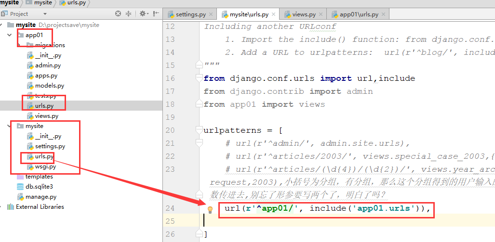
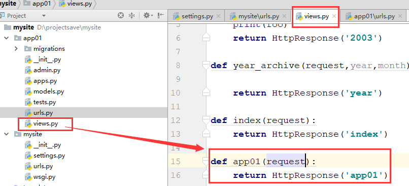

目录
URL配置(URLconf)就像Django 所支撑网站的目录。它的本质是URL与要为该URL调用的视图函数之间的映射表。你就是以这种方式告诉Django，对于这个URL调用这段代码，对于那个URL调用那段代码。
from django.conf.urls import url
#循环urlpatterns，找到对应的函数执行,匹配上一个路径就找到对应的函数执行，就不再往下循环了，并给函数传一个参数request，和wsgiref的environ类似，就是请求信息的所有内容
urlpatterns = [
url(正则表达式, views视图函数，参数，别名),
]注意：
Django 2.0版本中的路由系统已经替换成下面的写法，但是django2.0是向下兼容1.x版本的语法的（官方文档）：
from django.urls import path
urlpatterns = [
path('articles/2003/', views.special_case_2003),
path('articles/<int:year>/', views.year_archive),
path('articles/<int:year>/<int:month>/', views.month_archive),
path('articles/<int:year>/<int:month>/<slug:slug>/', views.article_detail),
]from django.conf.urls import url
from . import views
urlpatterns = [
url(r'^articles/2003/$', views.special_case_2003), #思考：如果用户想看2004、2005、2006....等，你要写一堆的url吗，是不是在articles后面写一个正则表达式/d{4}/就行啦，网址里面输入127.0.0.1:8000/articles/1999/试一下看看
url(r'^articles/([0-9]{4})/$', views.year_archive),
url(r'^articles/([0-9]{4})/([0-9]{2})/$', views.month_archive), #思考，如果你想拿到用户输入的什么年份，并通过这个年份去数据库里面匹配对应年份的文章，你怎么办？怎么获取用户输入的年份啊，分组/(\d{4})/，一个小括号搞定
url(r'^articles/([0-9]{4})/([0-9]{2})/([0-9]+)/$', views.article_detail),
]views.py中视图函数的写法：
第一个参数必须是request，后面跟的三个参数是对应着上面分组正则匹配的每个参数的
def article_detail(request,year,month,day):
return HttpResponse(year+month+day)urlpatterns中的元素按照书写顺序从上往下逐一匹配正则表达式，一旦匹配成功则不再继续。
若要从URL中捕获一个值，只需要在它周围放置一对圆括号（分组匹配）。
不需要添加一个前导的反斜杠（也就是写在正则最前面的那个/），因为每个URL 都有。例如，应该是^articles 而不是 ^/articles。
每个正则表达式前面的'r' 是可选的但是建议加上。
^articles& 以什么结尾，以什么开头，严格限制路径
# 是否开启URL访问地址后面不为/跳转至带有/的路径的配置项
APPEND_SLASH=TrueDjango settings.py配置文件中默认没有 APPEND_SLASH 这个参数，但 Django 默认这个参数为 APPEND_SLASH = True。 其作用就是自动在网址结尾加'/'。其效果就是：我们定义了urls.py：
from django.conf.urls import url
from app01 import views
urlpatterns = [
url(r'^blog/$', views.blog),
]访问 http://www.example.com/blog 时，默认将网址自动转换为 http://www.example/com/blog/ 。
如果在settings.py中设置了 APPEND_SLASH=False，此时我们再请求 http://www.example.com/blog 时就会提示找不到页面。
上面的示例使用简单的正则表达式分组匹配（通过圆括号）来捕获URL中的值并以位置参数形式传递给视图。
在更高级的用法中，可以使用分组命名匹配的正则表达式组来捕获URL中的值并以关键字参数形式传递给视图。
在Python的正则表达式中，分组命名正则表达式组的语法是(?P<name>pattern)，其中name是组的名称，pattern是要匹配的模式。
from django.conf.urls import url
from . import views
urlpatterns = [
url(r'^articles/2003/$', views.special_case_2003), #注意正则匹配出来的内容是字符串，即便是你在url里面写的是2003数字，匹配出来之后也是字符串
url(r'^articles/(\d{4})/$', views.year_archive),#year_archive(request,n),小括号为分组，有分组，那么这个分组得到的用户输入的内容，就会作为对应函数的位置参数传进去,别忘了形参要写两个了，明白了吗？
url(r'^articles/(?P<year>[0-9]{4})/$', views.year_archive),#某年的，(?P<year>[0-9]{4})这是命名参数（正则命名匹配还记得吗？），那么函数year_archive(request,year)，形参名称必须是year这个名字。而且注意如果你这个正则后面没有写$符号，即便是输入了月份路径，也会被它拦截下拉，因为它的正则也能匹配上
url(r'^articles/(?P<year>[0-9]{4})/(?P<month>[0-9]{2})/$', views.month_archive),#某年某月的
url(r'^articles/(?P<year>[0-9]{4})/(?P<month>[0-9]{2})/(?P<day>[0-9]{2})/$', views.article_detail), #某年某月某日的
]这个实现与前面的示例完全相同，只有一个细微的差别：捕获的值作为关键字参数而不是位置参数传递给视图函数。
例如，针对url /articles/2017/12/相当于按以下方式调用视图函数：
views.month_archive(request, year="2017", month="12")，year和month的位置可以换，没所谓了，因为是按照名字来取数据的，还记得关键字参数吗？在实际应用中，使用分组命名匹配的方式可以让你的URLconf 更加明晰且不容易产生参数顺序问题的错误，但是有些开发人员则认为分组命名组语法太丑陋、繁琐。
至于究竟应该使用哪一种，你可以根据自己的喜好来决定。
URLconf 在请求的URL 上查找，将它当做一个普通的Python 字符串。不包括GET和POST参数以及域名。
例如，http://www.example.com/myapp/ 请求中，URLconf 将查找myapp/。
在http://www.example.com/myapp/?page=3 请求中，URLconf 仍将查找myapp/。
URLconf 不检查请求的方法。换句话讲，所有的请求方法 —— 同一个URL的POST、GET、HEAD等等 —— 都将路由到相同的函数。
每个在URLconf中捕获的参数都作为一个普通的Python字符串传递给视图，无论正则表达式使用的是什么匹配方式。例如，下面这行URLconf 中：
url(r'^articles/(?P<year>[0-9]{4})/$', views.year_archive), 传递到视图函数views.year_archive() 中的year 参数永远是一个字符串类型。
# urls.py中
from django.conf.urls import url
from . import views
urlpatterns = [
url(r'^blog/$', views.page),
url(r'^blog/page(?P<num>[0-9]+)/$', views.page),
]
# views.py中，可以为num指定默认值
def page(request, num="1"):
pass在上面的例子中，两个URL模式指向相同的view - views.page - 但是第一个模式并没有从URL中捕获任何东西。
如果第一个模式匹配上了，page()函数将使用其默认参数num=“1”,如果第二个模式匹配，page()将使用正则表达式捕获到的num值。
问大家一个问题，views和models文件是不是都放在每一个app应用里面了啊，而urls.py这个文件放在哪了，是不是放在项目文件夹里面了，说明什么，说明是不是所有的app都在使用它，如果你一个项目有10个应用，每个应用有100个url，那意味着你要在urls文件里面要写多少条url对应关系，并且所有的app的url都写在了这一个urls文件里面啊，这样好吗，当然也没有问题，但是耦合程度太高了，所以django在url这里给你提供了一个分发接口，叫做include
#At any point, your urlpatterns can “include” other URLconf modules. This
#essentially “roots” a set of URLs below other ones.
#For example, here’s an excerpt of the URLconf for the Django website itself.
#It includes a number of other URLconfs:
from django.conf.urls import include, url
urlpatterns = [
url(r'^admin/', admin.site.urls),
url(r'^blog/', include('blog.urls')), # 可以包含其他的URLconfs文件 url(r'^app01/',include('app01.urls')), #别忘了要去app01这个应用下创建一个urls.py的文件，现在的意思是凡是以app01开头的路径请求，都让它去找app01下的urls文件中去找对应的视图函数，还要注意一点，此时这个文件里面的那个app01路径不能用$结尾，因为如果写了$，就没办法比配上app01/后面的路径了
]app01的urls.py的内容：（其实就是将全局的urls.py里面的内容copy一下，放到你在app01文件夹下创建的那个urls.py文件中，把不是这个app01应用的url给删掉就行了）
from django.conf.urls import url
#from django.contrib import admin
from app01 import views
urlpatterns = [
# url(r'^admin/', admin.site.urls),
url(r'^articles/2003/', views.special_case_2003,{'foo':'xxxxx'}), #{'foo':'xxxxx'}那么你的视图函数里面必须有个形参叫做foo来接收这种传参
url(r'^articles/(\d{4})/(\d{2})/', views.year_archive),
]此时的目录结构：

此时我们再访问之前的articles相关的网址路径的时候，就需要写上app01开头的了
正确输入方式：
其实相当于做了什么呢，将网址http://127.0.0.1:8000/app01/articles/2003/，里面的路径部分app01/articles/2003/，到项目的urls.py里面匹配，匹配到了app01/，然后拿着路径剩余的部分articles/2003/去app01里面的urls.py文件里面进行匹配，找到对应的函数执行。
还要注意一点，看下面的$符号：
再来看：如果我们想通过输入http://127.0.0.1:8000/app01/，看到app01这个应用的首页，怎么办？就像我现在输入一个http://127.0.0.1:8000来查看网站的首页，怎么办，也就是说我后面不加任何路径，就看你网址的首页，怎么办，一般网站的根路径都是网站的首页，对不对
看下面这种写法可不可以：
views.py里面写了这么个函数
输入网址：
发现都跑到index这个函数里面去执行了，也就是说，全部被这个没有匹配规则的url获取到了，对不对
正确的写法，匹配根路径的写法：
url(r'^$', views.index),#以空开头，还要以空结尾，写在项目的urls.py文件里面就是项目的首页，写在应用文件夹里面的urls.py文件中，那就是app01的首页app01函数的内容：

还有注意一点，就是加app的时候，需要进行配置：
URLconfs 具有一个钩子，让你传递一个Python 字典作为额外的参数传递给视图函数。
django.conf.urls.url()函数可以接收一个可选的第三个参数，它是一个字典，表示想要传递给视图函数的额外关键字参数。
例如：
from django.conf.urls import url
from . import views
urlpatterns = [
url(r'^blog/(?P<year>[0-9]{4})/$', views.year_archive, {'foo': 'bar'}),#注意，这就像一个命名分组一样，你的函数里面的必须有一个形参，形参必须叫做foo才行，如果是命名分组的url，那么foo参数写在函数的哪个位置都行，如果不是命名分组，那么都是将这个形参写在参数的最后。
]在这个例子中，对于/blog/2005/请求，Django 将调用views.year_archive(request, year='2005', foo='bar')。
这个技术在Syndication 框架中使用，来传递元数据和选项给视图。
我们自己写的url里面的路径有没有可能会更改，如果路径更改了，那么我们前端访问这个路径的标签（a标签，form表单等等）里面的属性值是不是也要自己手动去改啊，这样我们拓展起来就不方便了，你想是不是？尤其是前端可能不是你写的，那你是不是要进行部门沟通啊，想一想怎么办？
在使用Django 项目时，一个常见的需求是获得URL的最终形式，以用于嵌入到生成的内容中（视图中和显示给用户的URL等）或者用于处理服务器端的导航（重定向等）。
人们强烈希望不要硬编码（其实就是在标签里面写死了路径，凡是写死了的代码就是硬编码）这些URL（费力、不可扩展且容易产生错误）或者设计一种与URLconf 毫不相关的专门的URL 生成机制，因为这样容易导致一定程度上产生过期的URL。
换句话讲，需要的是一个DRY 机制。除了其它有点，它还允许设计的URL 可以自动更新而不用遍历项目的源代码来搜索并替换过期的URL。
获取一个URL 最开始想到的信息是处理它视图的标识（例如名字），查找正确的URL 的其它必要的信息有视图参数的类型（位置参数、关键字参数）和值。
Django 提供一个办法是让URL 映射是URL 设计唯一的地方。你填充你的URLconf，然后可以双向使用它：
根据用户/浏览器发起的URL 请求，它调用正确的Django 视图，并从URL 中提取它的参数需要的值。
根据Django 视图的标识和将要传递给它的参数的值，获取与之关联的URL。
第一种方式是我们在前面的章节中一直讨论的用法。第二种方式叫做反向解析URL、反向URL 匹配、反向URL 查询或者简单的URL 反查。
在需要URL 的地方，对于不同层级，Django 提供不同的工具用于URL 反查：
在模板中：使用url模板标签。
在Python 代码中：使用django.core.urlresolvers.reverse() 函数。
在更高层的与处理Django 模型实例相关的代码中：使用get_absolute_url() 方法。
上面说了一大堆，你可能并没有看懂。（那是官方文档的生硬翻译）。
咱们简单来说就是可以给我们的URL匹配规则起个名字，一个URL匹配模式起一个名字。
这样我们以后就不需要写死URL代码了，只需要通过名字来调用当前的URL。
举个简单的例子:
url(r'^home', views.home, name='home'), # 给我的url匹配模式起名（别名）为 home，别名不需要改，路径你就可以随便改了，别的地方使用这个路径，就用别名来搞
url(r'^index/(\d*)', views.index, name='index'), # 给我的url匹配模式起名为index在模板里面可以这样引用：
{% url 'home' %} #模板渲染的时候，被django解析成了这个名字对应的那个url，这个过程叫做反向解析from django.urls import reverse
reverse("index", args=("2018", ))考虑下面的URLconf：
from django.conf.urls import url
from . import views
urlpatterns = [
# ...
url(r'^articles/([0-9]{4})/$', views.year_archive, name='news-year-archive'),
# ...
]根据这里的设计，某一年nnnn对应的归档的URL是/articles/nnnn/。
可以在模板的代码中使用下面的方法获得它们：
<a href="{% url 'news-year-archive' 2012 %}">2012 Archive</a>
<ul>
{% for yearvar in year_list %}
<li><a href="{% url 'news-year-archive' yearvar %}">{{ yearvar }} Archive</a></li>
{% endfor %}
</ul>在Python 代码中，这样使用:
from django.urls import reverse
from django.shortcuts import redirect
def redirect_to_year(request):
# ...
year = 2006
# ...
return redirect(reverse('news-year-archive', args=(year,))) #或者直接return redirect('news-year-archive',year) redirect内部会自动调用reverse来进行反向解析如果出于某种原因决定按年归档文章发布的URL应该调整一下，那么你将只需要修改URLconf 中的内容。
在某些场景中，一个视图是通用的，所以在URL 和视图之间存在多对一的关系。对于这些情况，当反查URL 时，只有视图的名字还不够。
注意：
为了完成上面例子中的URL 反查，你将需要使用命名的URL 模式。URL 的名称使用的字符串可以包含任何你喜欢的字符。不只限制在合法的Python 名称。
当命名你的URL 模式时，请确保使用的名称不会与其它应用中名称冲突。如果你的URL 模式叫做comment，而另外一个应用中也有一个同样的名称，当你在模板中使用这个名称的时候不能保证将插入哪个URL。
在URL 名称中加上一个前缀，比如应用的名称，将减少冲突的可能。我们建议使用myapp-comment 而不是comment。
即使不同的APP使用相同的URL名称，URL的命名空间模式也可以让你唯一反转命名的URL。
项目的urls.py写法：
from django.conf.urls import url,include
from django.contrib import admin
urlpatterns = [
url(r'^admin/', admin.site.urls),
url(r'^app01/', include('app01.urls')),
url(r'^app02/', include('app02.urls')),
]app01下的urls.py写法
from django.conf.urls import url
from django.contrib import admin
from app01 import views
urlpatterns = [
# url(r'^admin/', admin.site.urls),
url(r'^index/', views.index,name='index'),
]app02下的urls.py的写法
from django.conf.urls import url
from django.contrib import admin
from app02 import views
# app_name = 'app02'
urlpatterns = [
# url(r'^admin/', admin.site.urls),
url(r'^index/', views.index,name='index'),
]app01下的views.py的写法
from django.shortcuts import render,HttpResponse,redirect
from django.urls import reverse
# Create your views here.
def index(request):
print(reverse('index'))
return HttpResponse('ok')app02下的views.py的写法
from django.shortcuts import render,HttpResponse,redirect
from django.urls import reverse
# Create your views here.
def index(request):
print(reverse('index'))
return HttpResponse('ok2')你会发现，不管你是访问app01下的index还是app02下的index，打印的结果都是/app02/index/，也就是打印的是最后一个index别名对应的url路径。所以别名冲突了的话就需要我们的命名空间来保证别名对应的url的唯一性了。
project中的urls.py
from django.conf.urls import url, include
urlpatterns = [
url(r'^app01/', include('app01.urls', namespace='app01')),
url(r'^app02/', include('app02.urls', namespace='app02')),
]app01中的urls.py
from django.conf.urls import url
from app01 import views
urlpatterns = [
url(r'^(?P<pk>\d+)/$', views.detail, name='detail')
]app02中的urls.py
from django.conf.urls import url
from app02 import views
urlpatterns = [
url(r'^(?P<pk>\d+)/$', views.detail, name='detail')
]现在，我的两个app中 url名称重复了，我反转URL的时候就可以通过命名空间的名称得到我当前的URL。
命名空间名称:URL名称
模板中使用：
{% url 'app01:detail' pk=12 pp=99 %}views中的函数中使用
v = reverse('app01:detail', kwargs={'pk':11})这样即使app中URL的命名相同，我也可以反转得到正确的URL了。
第二种写法：就是在每个app下的urls.py文件中指定app名称，同样是命名空间。
from django.conf.urls import url,include
from django.contrib import admin
urlpatterns = [
url(r'^admin/', admin.site.urls),
url(r'^app01/', include('app01.urls')),
url(r'^app02/', include('app02.urls')),
]app01下的urls.py
from django.conf.urls import url
from app01 import views
app_name = 'app01'
urlpatterns = [
url(r'^index/', views.index,name='index'),
]app02下的urls.py
from django.conf.urls import url
from app02 import views
app_name = 'app02'
urlpatterns = [
url(r'^index/', views.index,name='index'),
]app01下的view视图中反向解析
def index(request):
print(reverse('app01:index'))
return HttpResponse('ok')app02下的view视图中反向解析
def index(request):
print(reverse('app02:index'))
return HttpResponse('ok2')第三种写法：
项目的urls.py中的写法：
from django.conf.urls import url,include
from django.contrib import admin
urlpatterns = [
url(r'^admin/', admin.site.urls),
url(r'^app01/', include(('app01.urls','app01'),namespace='app01')),
url(r'^app02/', include(('app02.urls','app02'),namespace='app02')),
]那么其他的app中的urls.py中就不需要写app_name='应用名'了，看app01下urls.py的写法：
from django.conf.urls import url
from app01 import views
urlpatterns = [
url(r'^index/', views.index,name='index'),
]** app02下urls.py的写法：**
from django.conf.urls import url
from app02 import views
urlpatterns = [
url(r'^index/', views.index,name='index'),
]视图的写法：
#app01
def index(request):
print(reverse('app01:index'))
return HttpResponse('ok')
#app02
def index(request):
print(reverse('app02:index'))
return HttpResponse('ok2')